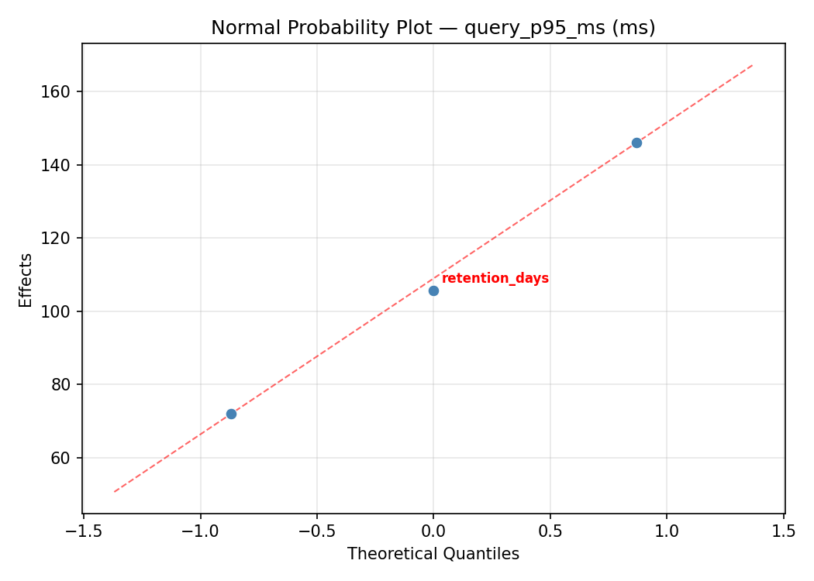
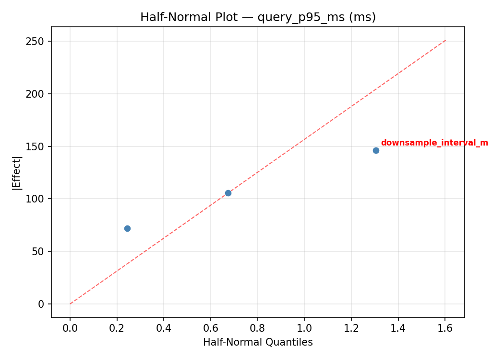
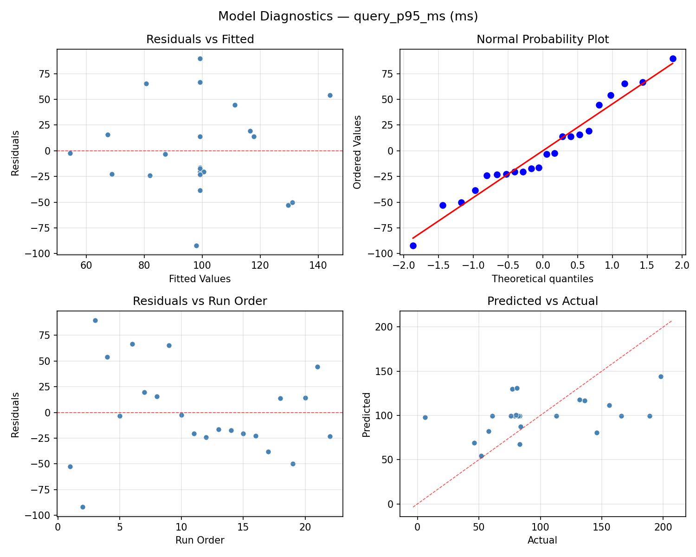
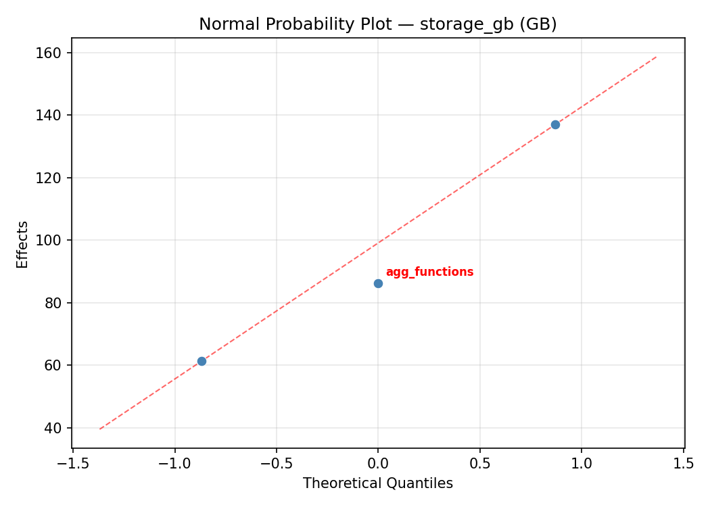
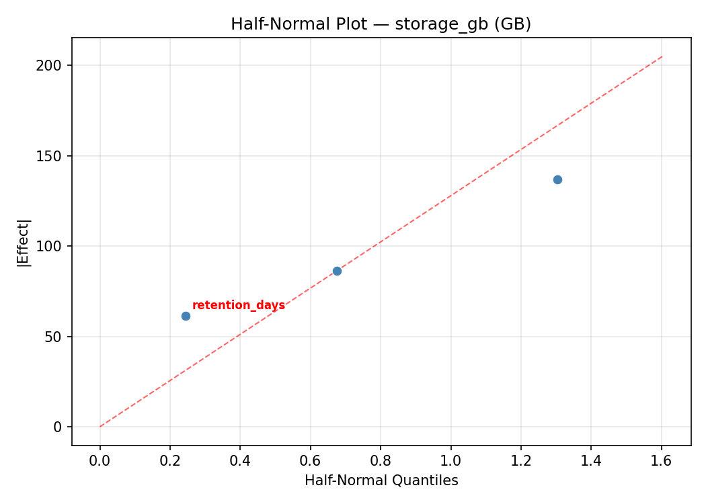
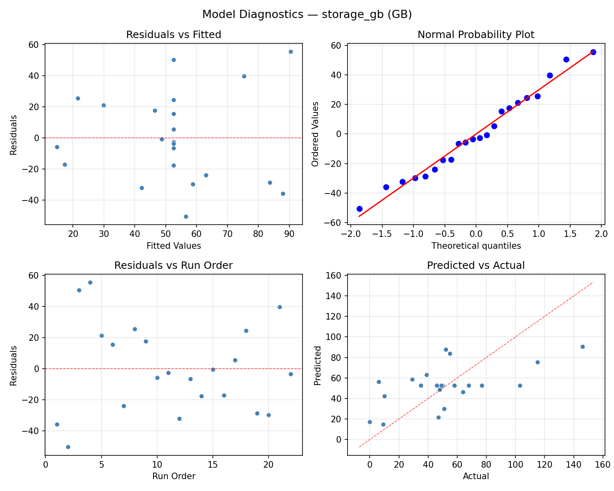

Summary
This experiment investigates time-series downsampling. Central Composite design for downsampling interval, retention policy, and aggregation for query speed.
The design varies 3 factors: downsample interval m (min), ranging from 1 to 60, retention days (days), ranging from 7 to 365, and agg functions (count), ranging from 2 to 8. The goal is to optimize 2 responses: query p95 ms (ms) (minimize) and storage gb (GB) (minimize). Fixed conditions held constant across all runs include db engine = timescaledb, ingestion rate = 100000.
A Central Composite Design (CCD) was selected to fit a full quadratic response surface model, including curvature and interaction effects. With 3 factors this produces 22 runs including center points and axial (star) points that extend beyond the factorial range.
Quadratic response surface models were fitted to capture potential curvature and factor interactions. The RSM contour plots below visualize how pairs of factors jointly affect each response.
Key Findings
For query p95 ms, the most influential factors were downsample interval m (47.1%), retention days (35.2%), agg functions (17.8%). The best observed value was 6.0 (at downsample interval m = 30.5, retention days = 186, agg functions = 5).
For storage gb, the most influential factors were downsample interval m (52.0%), retention days (41.3%), agg functions (6.7%). The best observed value was 0.0 (at downsample interval m = 30.5, retention days = -140.808, agg functions = 5).
Recommended Next Steps
- Run confirmation experiments at the predicted optimal settings to validate the model.
- Consider whether any fixed factors should be varied in a future study.
Experimental Setup
Factors
| Factor | Low | High | Unit |
|---|
downsample_interval_m | 1 | 60 | min |
retention_days | 7 | 365 | days |
agg_functions | 2 | 8 | count |
Fixed: db_engine = timescaledb, ingestion_rate = 100000
Responses
| Response | Direction | Unit |
|---|
query_p95_ms | ↓ minimize | ms |
storage_gb | ↓ minimize | GB |
Configuration
{
"metadata": {
"name": "Time-Series Downsampling",
"description": "Central Composite design for downsampling interval, retention policy, and aggregation for query speed"
},
"factors": [
{
"name": "downsample_interval_m",
"levels": [
"1",
"60"
],
"type": "continuous",
"unit": "min"
},
{
"name": "retention_days",
"levels": [
"7",
"365"
],
"type": "continuous",
"unit": "days"
},
{
"name": "agg_functions",
"levels": [
"2",
"8"
],
"type": "continuous",
"unit": "count"
}
],
"fixed_factors": {
"db_engine": "timescaledb",
"ingestion_rate": "100000"
},
"responses": [
{
"name": "query_p95_ms",
"optimize": "minimize",
"unit": "ms"
},
{
"name": "storage_gb",
"optimize": "minimize",
"unit": "GB"
}
],
"settings": {
"operation": "central_composite",
"test_script": "use_cases/45_time_series_downsampling/sim.sh"
}
}
Experimental Matrix
The Central Composite Design produces 22 runs. Each row is one experiment with specific factor settings.
| Run | downsample_interval_m | retention_days | agg_functions |
|---|
| 1 | 30.5 | 186 | 5 |
| 2 | 60 | 7 | 8 |
| 3 | 1 | 365 | 2 |
| 4 | 30.5 | 512.808 | 5 |
| 5 | 30.5 | 186 | 5 |
| 6 | -23.3594 | 186 | 5 |
| 7 | 30.5 | 186 | -0.477226 |
| 8 | 30.5 | 186 | 5 |
| 9 | 60 | 365 | 2 |
| 10 | 84.3594 | 186 | 5 |
| 11 | 30.5 | 186 | 5 |
| 12 | 30.5 | -140.808 | 5 |
| 13 | 30.5 | 186 | 5 |
| 14 | 1 | 7 | 8 |
| 15 | 30.5 | 186 | 5 |
| 16 | 60 | 7 | 2 |
| 17 | 30.5 | 186 | 10.4772 |
| 18 | 60 | 365 | 8 |
| 19 | 30.5 | 186 | 5 |
| 20 | 1 | 7 | 2 |
| 21 | 1 | 365 | 8 |
| 22 | 30.5 | 186 | 5 |
Step-by-Step Workflow
1
Preview the design
$ python doe.py info --config use_cases/45_time_series_downsampling/config.json
2
Generate the runner script
$ python doe.py generate --config use_cases/45_time_series_downsampling/config.json \
--output use_cases/45_time_series_downsampling/results/run.sh --seed 42
3
Execute the experiments
$ bash use_cases/45_time_series_downsampling/results/run.sh
4
Analyze results
$ python doe.py analyze --config use_cases/45_time_series_downsampling/config.json
5
Get optimization recommendations
$ python doe.py optimize --config use_cases/45_time_series_downsampling/config.json
6
Multi-objective optimization
With 2 competing responses, use --multi to find the best compromise via Derringer–Suich desirability.
$ python doe.py optimize --config use_cases/45_time_series_downsampling/config.json --multi
7
Generate the HTML report
$ python doe.py report --config use_cases/45_time_series_downsampling/config.json \
--output use_cases/45_time_series_downsampling/results/report.html
Features Exercised
| Feature | Value |
|---|
| Design type | central_composite |
| Factor types | continuous (all 3) |
| Arg style | double-dash |
| Responses | 2 (query_p95_ms ↓, storage_gb ↓) |
| Total runs | 22 |
Analysis Results
Generated from actual experiment runs using the DOE Helper Tool.
Response: query_p95_ms
Top factors: downsample_interval_m (47.1%), retention_days (35.2%), agg_functions (17.8%).
ANOVA
| Source | DF | SS | MS | F | p-value |
|---|
| Source | DF | SS | MS | F | p-value |
| downsample_interval_m | 4 | 6654.3636 | 1663.5909 | 0.374 | 0.8216 |
| retention_days | 4 | 5770.9470 | 1442.7367 | 0.324 | 0.8548 |
| agg_functions | 4 | 1355.6970 | 338.9242 | 0.076 | 0.9877 |
| Lack | of | Fit | 2 | 5503.8561 | 2751.9280 |
| Pure | Error | 7 | 31131.5000 | | |
| Error | 9 | 36635.3561 | 4447.3571 | | |
| Total | 21 | 50416.3636 | 2400.7792 | | |
Pareto Chart

Main Effects Plot

Normal Probability Plot of Effects

Half-Normal Plot of Effects

Model Diagnostics

Response: storage_gb
Top factors: downsample_interval_m (52.0%), retention_days (41.3%), agg_functions (6.7%).
ANOVA
| Source | DF | SS | MS | F | p-value |
|---|
| Source | DF | SS | MS | F | p-value |
| downsample_interval_m | 4 | 7298.6515 | 1824.6629 | 1.016 | 0.4486 |
| retention_days | 4 | 3867.9015 | 966.9754 | 0.539 | 0.7116 |
| agg_functions | 4 | 257.9015 | 64.4754 | 0.036 | 0.9971 |
| Lack | of | Fit | 2 | 1985.9886 | 992.9943 |
| Pure | Error | 7 | 12568.8750 | | |
| Error | 9 | 14554.8636 | 1795.5536 | | |
| Total | 21 | 25979.3182 | 1237.1104 | | |
Pareto Chart

Main Effects Plot

Normal Probability Plot of Effects

Half-Normal Plot of Effects

Model Diagnostics

Response Surface Plots
3D surfaces fitted with quadratic RSM. Red dots are observed data points.
query p95 ms downsample interval m vs agg functions

query p95 ms downsample interval m vs retention days

query p95 ms retention days vs agg functions

storage gb downsample interval m vs agg functions

storage gb downsample interval m vs retention days

storage gb retention days vs agg functions

Multi-Objective Optimization
When responses compete, Derringer–Suich desirability finds the best compromise.
Each response is scaled to a 0–1 desirability, then combined via a weighted geometric mean.
Overall Desirability
D = 0.9394
Per-Response Desirability
| Response | Weight | Desirability | Predicted | Dir |
|---|
query_p95_ms |
1.5 |
|
6.00 0.9545 6.00 ms |
↓ |
storage_gb |
1.0 |
|
6.00 0.9172 6.00 GB |
↓ |
Recommended Settings
| Factor | Value |
|---|
downsample_interval_m | 1 min |
retention_days | 365 days |
agg_functions | 8 count |
Source: from observed run #2
Trade-off Summary
Sacrifice = how much worse than single-objective best.
| Response | Predicted | Best Observed | Sacrifice |
|---|
storage_gb | 6.00 | 0.00 | +6.00 |
Top 3 Runs by Desirability
| Run | D | Factor Settings |
|---|
| #16 | 0.8359 | downsample_interval_m=30.5, retention_days=186, agg_functions=5 |
| #10 | 0.7976 | downsample_interval_m=1, retention_days=7, agg_functions=8 |
Model Quality
| Response | R² | Type |
|---|
storage_gb | 0.4897 | linear |
Full Multi-Objective Output
============================================================
MULTI-OBJECTIVE OPTIMIZATION
Method: Derringer-Suich Desirability Function
============================================================
Overall desirability: D = 0.9394
Response Weight Desirability Predicted Direction
---------------------------------------------------------------------
query_p95_ms 1.5 0.9545 6.00 ms ↓
storage_gb 1.0 0.9172 6.00 GB ↓
Recommended settings:
downsample_interval_m = 1 min
retention_days = 365 days
agg_functions = 8 count
(from observed run #2)
Trade-off summary:
query_p95_ms: 6.00 (best observed: 6.00, sacrifice: +0.00)
storage_gb: 6.00 (best observed: 0.00, sacrifice: +6.00)
Model quality:
query_p95_ms: R² = 0.4343 (linear)
storage_gb: R² = 0.4897 (linear)
Top 3 observed runs by overall desirability:
1. Run #2 (D=0.9394): downsample_interval_m=1, retention_days=365, agg_functions=8
2. Run #16 (D=0.8359): downsample_interval_m=30.5, retention_days=186, agg_functions=5
3. Run #10 (D=0.7976): downsample_interval_m=1, retention_days=7, agg_functions=8
Full Analysis Output
=== Main Effects: query_p95_ms ===
Factor Effect Std Error % Contribution
--------------------------------------------------------------
downsample_interval_m 86.0000 10.4464 47.1%
retention_days 64.2500 10.4464 35.2%
agg_functions 32.5000 10.4464 17.8%
=== ANOVA Table: query_p95_ms ===
Source DF SS MS F p-value
-----------------------------------------------------------------------------
downsample_interval_m 4 6654.3636 1663.5909 0.374 0.8216
retention_days 4 5770.9470 1442.7367 0.324 0.8548
agg_functions 4 1355.6970 338.9242 0.076 0.9877
Lack of Fit 2 5503.8561 2751.9280 0.619 0.5657
Pure Error 7 31131.5000 4447.3571
Error 9 36635.3561 4447.3571
Total 21 50416.3636 2400.7792
=== Summary Statistics: query_p95_ms ===
downsample_interval_m:
Level N Mean Std Min Max
------------------------------------------------------------
-23.3594 1 132.0000 0.0000 132.0000 132.0000
1 4 88.5000 34.8855 52.0000 136.0000
30.5 12 96.7500 57.3540 6.0000 198.0000
60 4 122.7500 36.1790 76.0000 156.0000
84.3594 1 46.0000 0.0000 46.0000 46.0000
retention_days:
Level N Mean Std Min Max
------------------------------------------------------------
-140.808 1 58.0000 0.0000 58.0000 58.0000
186 12 101.6667 57.9441 6.0000 198.0000
365 4 122.2500 30.9664 84.0000 156.0000
512.808 1 61.0000 0.0000 61.0000 61.0000
7 4 89.0000 40.1497 52.0000 146.0000
agg_functions:
Level N Mean Std Min Max
------------------------------------------------------------
-0.477226 1 79.0000 0.0000 79.0000 79.0000
10.4772 1 77.0000 0.0000 77.0000 77.0000
2 4 101.7500 28.0045 76.0000 136.0000
5 12 98.5833 59.7395 6.0000 198.0000
8 4 109.5000 49.8364 52.0000 156.0000
=== Main Effects: storage_gb ===
Factor Effect Std Error % Contribution
--------------------------------------------------------------
downsample_interval_m 76.2500 7.4988 52.0%
retention_days 60.5000 7.4988 41.3%
agg_functions 9.7500 7.4988 6.7%
=== ANOVA Table: storage_gb ===
Source DF SS MS F p-value
-----------------------------------------------------------------------------
downsample_interval_m 4 7298.6515 1824.6629 1.016 0.4486
retention_days 4 3867.9015 966.9754 0.539 0.7116
agg_functions 4 257.9015 64.4754 0.036 0.9971
Lack of Fit 2 1985.9886 992.9943 0.553 0.5984
Pure Error 7 12568.8750 1795.5536
Error 9 14554.8636 1795.5536
Total 21 25979.3182 1237.1104
=== Summary Statistics: storage_gb ===
downsample_interval_m:
Level N Mean Std Min Max
------------------------------------------------------------
-23.3594 1 29.0000 0.0000 29.0000 29.0000
1 4 33.5000 17.6918 9.0000 51.0000
30.5 12 57.4167 37.3520 6.0000 146.0000
60 4 76.2500 28.2533 49.0000 115.0000
84.3594 1 0.0000 0.0000 0.0000 0.0000
retention_days:
Level N Mean Std Min Max
------------------------------------------------------------
-140.808 1 10.0000 0.0000 10.0000 10.0000
186 12 54.1667 39.3997 0.0000 146.0000
365 4 70.5000 33.6403 39.0000 115.0000
512.808 1 58.0000 0.0000 58.0000 58.0000
7 4 39.2500 23.3862 9.0000 64.0000
agg_functions:
Level N Mean Std Min Max
------------------------------------------------------------
-0.477226 1 50.0000 0.0000 50.0000 50.0000
10.4772 1 52.0000 0.0000 52.0000 52.0000
2 4 50.0000 18.9385 35.0000 77.0000
5 12 51.3333 41.4758 0.0000 146.0000
8 4 59.7500 43.6759 9.0000 115.0000
Optimization Recommendations
=== Optimization: query_p95_ms ===
Direction: minimize
Best observed run: #2
downsample_interval_m = 30.5
retention_days = 186
agg_functions = 5
Value: 6.0
RSM Model (linear, R² = 0.3018, Adj R² = 0.1854):
Coefficients:
intercept +99.2727
downsample_interval_m +2.2175
retention_days +11.5604
agg_functions +29.9798
RSM Model (quadratic, R² = 0.5048, Adj R² = 0.1333):
Coefficients:
intercept +97.7464
downsample_interval_m +2.2175
retention_days +11.5604
agg_functions +29.9798
downsample_interval_m*retention_days +15.7500
downsample_interval_m*agg_functions -1.5000
retention_days*agg_functions +17.0000
downsample_interval_m^2 -3.8369
retention_days^2 -7.7369
agg_functions^2 +13.8633
Curvature analysis:
agg_functions coef=+13.8633 convex (has a minimum)
retention_days coef=-7.7369 concave (has a maximum)
downsample_interval_m coef=-3.8369 concave (has a maximum)
Notable interactions:
retention_days*agg_functions coef=+17.0000 (synergistic)
downsample_interval_m*retention_days coef=+15.7500 (synergistic)
downsample_interval_m*agg_functions coef=-1.5000 (antagonistic)
Predicted optimum (from linear model, at observed points):
downsample_interval_m = 30.5
retention_days = 186
agg_functions = 10.4772
Predicted value: 154.0078
Surface optimum (via L-BFGS-B, linear model):
downsample_interval_m = 1
retention_days = 7
agg_functions = 2
Predicted value: 55.5151
Model quality: Weak fit — consider adding center points or using a different design.
Factor importance:
1. agg_functions (effect: 113.8, contribution: 51.3%)
2. retention_days (effect: 73.0, contribution: 32.9%)
3. downsample_interval_m (effect: 35.0, contribution: 15.8%)
=== Optimization: storage_gb ===
Direction: minimize
Best observed run: #16
downsample_interval_m = 30.5
retention_days = -140.808
agg_functions = 5
Value: 0.0
RSM Model (linear, R² = 0.2176, Adj R² = 0.0872):
Coefficients:
intercept +52.5909
downsample_interval_m +7.0346
retention_days +14.9307
agg_functions +10.6322
RSM Model (quadratic, R² = 0.5185, Adj R² = 0.1574):
Coefficients:
intercept +49.9988
downsample_interval_m +7.0346
retention_days +14.9307
agg_functions +10.6322
downsample_interval_m*retention_days +12.8750
downsample_interval_m*agg_functions +18.1250
retention_days*agg_functions +10.3750
downsample_interval_m^2 +1.1960
retention_days^2 -6.7540
agg_functions^2 +9.4461
Curvature analysis:
agg_functions coef=+9.4461 convex (has a minimum)
retention_days coef=-6.7540 concave (has a maximum)
downsample_interval_m coef=+1.1960 convex (has a minimum)
Notable interactions:
downsample_interval_m*agg_functions coef=+18.1250 (synergistic)
downsample_interval_m*retention_days coef=+12.8750 (synergistic)
retention_days*agg_functions coef=+10.3750 (synergistic)
Predicted optimum (from quadratic model, at observed points):
downsample_interval_m = 60
retention_days = 365
agg_functions = 8
Predicted value: 127.8596
Surface optimum (via L-BFGS-B, quadratic model):
downsample_interval_m = 60
retention_days = 7
agg_functions = 2.08098
Predicted value: 14.7268
Model quality: Moderate fit — use predictions directionally, not precisely.
Factor importance:
1. retention_days (effect: 74.5, contribution: 47.0%)
2. agg_functions (effect: 57.8, contribution: 36.5%)
3. downsample_interval_m (effect: 26.2, contribution: 16.6%)